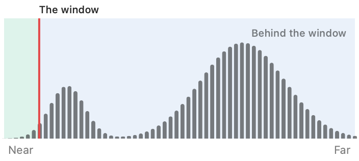

Stereo Dandifier · Help · Links · Support · Privacy
Parallax
Sets where a pair stands against the stereo window. The eyes are moved apart or together, which adds the same disparity to every point: the whole picture moves back or forward, and its depth within is unchanged. Both eyes are then cut, in whole pixels, to what they share, so nothing is resampled.
It is customary to set the nearest part of the subject at, or a little behind, the window. Anything standing before the window and cut by its edge will be found uncomfortable to view.

Settings for each pair
- Parallax — up to 10% of the picture's width either way: positive sets the picture further back, negative brings it forward. Set it on the histogram of the pair's disparities (nearest at the left, farthest at the right) by dragging the red line to the disparity that should lie at the window; while the line is held, whatever has that disparity is marked red in the preview. It may also be typed, or moved 0.05% at a press by the arrows either side; hold an arrow to keep moving.
- Auto Adjust Parallax — puts the window at the pair's nearest parts.
- Show Window and Show Nearest — mark in red what stands at the window, and in cyan the nearest 3% of the picture. They are aids only, and are not kept.
Beneath the controls it is stated how far before and behind the window the picture reaches, as a percentage of the width, or which way to move it should nothing stand at the window.
A parallax set before something upstream was altered is marked "Upstream changed" until it is set again.
The preview
The pair as it reaches the node, each eye moved half the parallax, uncut; the node's output is cut. The marks come from Stereo Align's measurement of the pair, and are a little coarser than its pixels.
Where it goes
Directly after Stereo Align: the histogram and the marks are Align's measurement of the eyes it hands on. A pair not aligned, or Reset, may still be given a parallax, but nothing is marked. A pair aligned before Parallax was added must be aligned again for its marks to show.
Actions
- Reset All — returns every pair to no parallax.
- Auto Adjust Parallax All — puts every aligned pair's window at its nearest parts; pairs not aligned are left as they were.